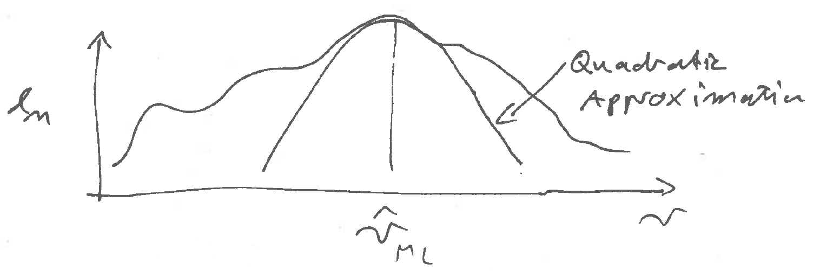
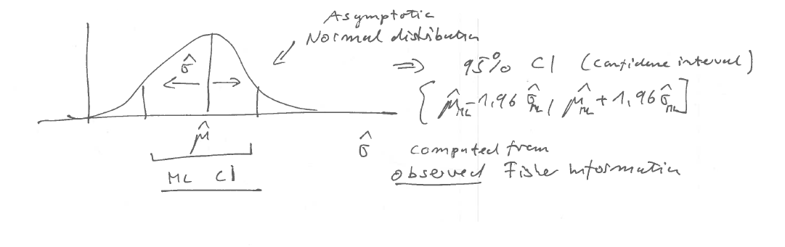
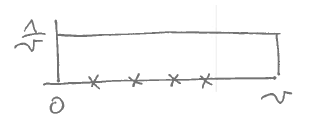

4 Quadratic approximation and normal asymptotics
In this chapter we first introduce the multivariate normal distribution and then study second order approximation of the likelihood function.
4.1 Covariance, correlation and multivariate normal distribution
The density of a normally distributed scalar variable \(x \sim N(\mu, \sigma^2)\) with mean \(\text{E}(x) = \mu\) and variance \(\text{Var}(x) = \sigma^2\) is \[ f(x |\mu, \sigma^2) = \frac{1}{\sqrt{2\pi\sigma^2}} \exp\left( -\frac{(x-\mu)^2}{2\sigma^2} \right) \] This is known as the univariate normal density. Note that the variance is given by \[ \text{Var}(x) = \text{E}\left( (x-\text{E}(x))^2 \right) = \text{E}\left((x-\mu)^2 \right)=\text{E}\left( (x-\mu)(x-\mu) \right) = \text{E}(x^2)-\mu^2 \]
For a random vector \(\boldsymbol x= (x_1, x_2,...,x_d)^T\) with mean \(\text{E}(\boldsymbol x) = \boldsymbol \mu\) the variance is generalised to the covariance matrix (of size \(d\times d\)). \[ \text{Var}(\boldsymbol x) = \text{E}\left(\underbrace{(\boldsymbol x-\boldsymbol \mu)}_{d\times 1} \underbrace{(\boldsymbol x-\boldsymbol \mu)^T}_{1\times d}\right) = \underbrace{\boldsymbol \Sigma}_{d\times d} = \text{E}(\boldsymbol x\boldsymbol x^T)-\boldsymbol \mu\boldsymbol \mu^T \] The covariance matrix is symmetric by construction and positive semi-definite, i.e. the eigenvalues of \(\boldsymbol \Sigma\) are all positive or equal to zero. However, we will aim to use non-singular covariance matrices, with all eigenvalues positive, so that it can be inverted.
A covariance matrix can factorised into the product \[\boldsymbol \Sigma= \boldsymbol V^{\frac{1}{2}} \boldsymbol P\boldsymbol V^{\frac{1}{2}}\] where \(\boldsymbol V\) is a diagonal matrix containing the variances \[ \boldsymbol V= \begin{pmatrix} \sigma_{11} & \dots & 0\\ \vdots & \ddots & \vdots \\ 0 & \dots & \sigma_{dd} \end{pmatrix}\] and the matrix \(\boldsymbol P\) (“capital rho”) is the symmetric correlation matrix \[ \boldsymbol P= (\rho_{ij}) = \begin{pmatrix} 1 & \dots & \rho_{1d}\\ \vdots & \ddots & \vdots \\ \rho_{d1} & \dots & 1 \end{pmatrix}\] Thus, the correlation between \(x_i\) and \(x_j\) is defined as \[\rho_{ij} = \text{Cor}(x_i,x_j) = \frac{\sigma_{ij}}{\sqrt{\sigma_{ii}\sigma_{jj}}}\]
The generalisation of the normal distribution to random vectors of size \(d\) is the multivariate normal distribution \(N_d(\boldsymbol \mu, \boldsymbol \Sigma)\) with mean \(\boldsymbol \mu\) and covariance matrix \(\boldsymbol \Sigma\). The corresponding density is \[f(\boldsymbol x| \boldsymbol \mu, \boldsymbol \Sigma) = (2\pi)^{-\frac{d}{2}} \det(\boldsymbol \Sigma)^{-\frac{1}{2}} \exp\left({{-\frac{1}{2}} \underbrace{\underbrace{(\boldsymbol x-\boldsymbol \mu)^T}_{1 \times d} \underbrace{\boldsymbol \Sigma^{-1}}_{d \times d} \underbrace{(\boldsymbol x-\boldsymbol \mu)}_{d \times 1} }_{1 \times 1 = \text{scalar!}}}\right)\]
For \(d=1\) we get \(\boldsymbol \mu= \mu\) and \(\boldsymbol \Sigma= \sigma^2\) and the multivariate normal density reduces to the univariate normal density.
4.2 Maximum likelihood estimates of the parameters of the multivariate normal distribution
Maximising the log-likelihood based on the multivariate normal density yields the MLEs for \(\boldsymbol \mu\) and \(\boldsymbol \Sigma\). These are generalisations of the MLEs for the mean \(\mu\) and variance \(\sigma^2\) of the univariate normal as encounteed the previous chapter.
The estimates can be written in three different ways:
Data vector notation
with \(\boldsymbol x_1,\ldots, \boldsymbol x_n\) the \(n\) vector-valued observations from the multivariate normal:
MLE for the mean: \[\hat{\boldsymbol \mu} = \frac{1}{n}\sum^{n}_{k=1} \boldsymbol x_k\]
MLE for the covariance: \[\underbrace{\widehat{\boldsymbol \Sigma}}_{d \times d} = \frac{1}{n}\sum^{n}_{k=1} \underbrace{\left(\boldsymbol x_k-\hat{\boldsymbol \mu}\right)}_{d \times 1} \; \underbrace{\left(\boldsymbol x_k-\hat{\boldsymbol \mu}\right)^T}_{1 \times d}\] Note the factor \(\frac{1}{n}\) in the estimator of the covariance matrix.
Data component notation
with \(x_{ki}\) the \(i\)-th component of the \(k\)-th sample:
\[\hat{\mu}_i = \frac{1}{n}\sum^{n}_{k=1} x_{ki}\]
\[\hat{\sigma}_{ij} = \frac{1}{n}\sum^{n}_{k=1} \left(x_{ki}-\hat{\mu}_i\right)\left(\ x_{kj}-\hat{\mu}_j\right)\]
\[\hat{\boldsymbol \mu}=\begin{pmatrix} \hat{\mu}_{1} \\ \vdots \\ \hat{\mu}_{d} \end{pmatrix}, \widehat{\boldsymbol \Sigma} = (\hat{\sigma}_{ij})\]
Variance estimate:
\[\hat{\sigma}_{ii} = \frac{1}{n}\sum^{n}_{k=1} \left(x_{ki}-\hat{\mu}_i\right)^2\]
Data matrix notation
with \(\boldsymbol X= (x_{ij})\) being the data matrix, with samples in rows and variables in columns.
Note that this is the statistics convention for the data matrix \(\boldsymbol X\). However, in the machine learning literature the convention is often reversed and variables are assumed to be in the rows and samples in columns!!
\[ \hat{\boldsymbol \mu} = \frac{1}{n} \boldsymbol X^T \boldsymbol 1_n \] Here \(\boldsymbol 1_n\) is a vector of length \(n\) containing 1 at each component.
\[ \hat{\boldsymbol \Sigma} = \frac{1}{n} \boldsymbol X^T \boldsymbol X- \hat{\boldsymbol \mu} \hat{\boldsymbol \mu}^T \] To simplify the expression for the estimate of the covariance matrix one often assumes that the data matrix is centered, i.e. that \(\hat{\boldsymbol \mu} = 0\).
In machine learning notation, the data matrix has to be transposed and estimates are \[ \hat{\boldsymbol \mu} = \frac{1}{n} \boldsymbol X\boldsymbol 1_n \] \[ \hat{\boldsymbol \Sigma} = \frac{1}{n} \boldsymbol X\boldsymbol X^T - \hat{\boldsymbol \mu} \hat{\boldsymbol \mu}^T \]
Because of the ambiguity in convention (machine learning vs statistics convention) and the often implicit use of centered data matrices the matrix notation is often confusing. Hence, using the other two notations is generally preferable.
4.3 Quadratic approximation of log-likelihood function around MLE
The observed Fisher information (matrix) \({\boldsymbol J_n}(\hat{\boldsymbol \theta}_{ML})\) occurs naturally in the quadratic approximation of the log-likelihood function:

Recall the Taylor series approximation of scalar-valued function \(f(\boldsymbol x)\) around \(\boldsymbol x_0\): \[ f(\boldsymbol x) \approx f(\boldsymbol x_0) + \nabla f(\boldsymbol x_0) (\boldsymbol x-\boldsymbol x_0) + \frac{1}{2} (\boldsymbol x-\boldsymbol x_0)^T \nabla^T \nabla f(\boldsymbol x_0) (\boldsymbol x-\boldsymbol x_0) + \ldots \]
The second order Taylor series of \(l_n(\boldsymbol \theta)\) around the maximum likelihood \(\hat{\boldsymbol \theta}_{ML}\) yields:
for univariate \(\theta\): \[l_n(\theta) = l_n(\hat{\theta}_{ML})- \frac{1}{2}(\hat{\theta}_{ML}- \theta)^2 J_n(\hat{\theta}_{ML})+\dots\]
for multivariate \(\boldsymbol \theta\): \[l_n(\boldsymbol \theta) = l_n(\hat{\boldsymbol \theta}_{ML})- \frac{1}{2}(\hat{\boldsymbol \theta}_{ML}- \boldsymbol \theta)^T J_n(\hat{\boldsymbol \theta}_{ML})(\hat{\boldsymbol \theta}_{ML}-\boldsymbol \theta)+\dots\]
Note that there is no linear term as we assume \(\nabla l_n(\hat{\boldsymbol \theta}_{ML} ) = 0\), i.e. that the gradient of the log-likelihood function vanishes at the MLE by construction.
Note the similarity of the above quadratic approximation with the log-density of the univariate and multivariate normal distribution:
log-density of univariate normal distribution: \(C - \frac{1}{2} {(x-\mu)^2} \sigma^{-2}\)
log-density of multivariate normal: \(C - \frac{1}{2}(\boldsymbol x-\boldsymbol \mu)^T \boldsymbol \Sigma^{-1} (\boldsymbol x-\boldsymbol \mu)\)
In particular note that in this approximation the observed Fisher information (matrix) plays the role of the inverse (co)variance (matrix) \(\sigma^{-2}\) and \(\boldsymbol \Sigma^{-1}\)!
Taking an quadratic approximation is thus closely linked to assuming normality.
4.4 Asymptotic normality of MLE
Theorem: Asymptotic normality of MLE point estimate, with inverse Fisher information as variance.
Intuitively, it would makes sense to associate large amount of curvature at the MLE with low variance of the MSE (and conversely, low amount of curvature with high variance).
This intuition is confirmed by the following theorem: For large sample size \(n\) the MLE is normally distributed around the true parameter and with (co)variance equal to the inverse of the observed Fisher information
\[\hat{\boldsymbol \theta}_{ML} \overset{a}{\sim}\underbrace{N_d}_{\text{multivariate normal}}\left(\underbrace{\boldsymbol \theta}_{\text{mean vector}},\underbrace{\boldsymbol J_n(\hat{\boldsymbol \theta}_{ML})^{-1}}_{\text{ covariance matrix}}\right)\]
For an single scalar parameter \(\theta\) this reduces to \[ \hat{\theta} \overset{a}{\sim} N(\theta, J_n(\hat{\theta})^{-1}) \]
This theorem is valid under regularity conditions. The most important requirements are that the likelihood is twice differentiable at \(\hat{\boldsymbol \theta}_{ML}\) so that the observed Fisher information can be computed, and that the MLE lies at a peak within the support and not at the boundary.
Note we only state the result here, the proof itself will be explained in more advanced later modules (cf. Year 3 course “Statistical Inference”). Essentially, the proof works by showing that the error of the quadratic approximation becomes negligible for large sample size.
This theorem greatly enhances the usefulness of the method of maximum likelihood: In regular setting ML not only yields point estimates for the parameters but also (asymptotic) estimates of their variance and a corresponding normal sampling distribution for the estimated parameter.
4.5 Observed or expected Fisher information to estimate variance of the MLE?
There used to be some discussion whether to use the observed or the expected Fisher information to estimate the variance. There’s an important classic paper that answers this question:
Efron, B. & Hinkley, D.V. (1978). Assessing the accuracy of the maximum likelihood estimator: Observed versus expected Fisher information. Biometrika, 65, 457-87. https://doi.org/10.1093/biomet/65.3.457
Conclusion: use the observed Fisher information \(\boldsymbol J_n\) not the expected Fisher information \(\boldsymbol I\)!
Because the observed Fisher information is based on the data at hand (like the MLE).
4.6 Normal confidence intervals for MLEs
Given a probability model for the data, maximum likelihood proceeds by
- maximisation of \(l_n(\boldsymbol \theta)\)
- computation of the curvature at \(l_n(\hat{\boldsymbol \theta}^{ML})\).
Then you get:
- a point estimate \(\hat{\boldsymbol \theta}_{ML}\)
- the asymptotic variance of \(\hat{\boldsymbol \theta}_{ML}\)
- the corresponding asymptotic normal distribution
The asymptotic normality enables us to construct a corresponding normal confidence interval (CI) and also to conduct associated tests (is a value included in the CI or not?):

Thus, to construct the asymptotic normal CI for a maximum likelihood estimator of a scalar \(\theta\) we use the MLE \(\hat{\theta}_{ML}\) and its standard deviation \(\hat{\sigma}=\widehat{\text{SD}}(\hat{\theta}_{ML})\) computed from the observed Fisher information:
\[\text{CI}=[\hat{\theta}_{ML} \pm c_{normal} \hat{\sigma}]\]
\(c_{normal}\) is a critical value for the standard-normal symmetric confidence interval chosen to achieve the desired nominal coverage (see also refresher).
| \(\kappa\) coverage | Critical value \(c_{\text{normal}}\) |
|---|---|
| 0.9 | 1.64 |
| 0.95 | 1.96 |
| 0.99 | 2.58 |
These values are computed using the inverse standard normal distribution function via \(c_{\text{normal}}=\Phi^{-1}\left(\frac{1+\kappa}{2}\right)\).
For example, for a CI with 95% coverage one uses the factor 1.96 so that \[\text{CI}=[\hat{\theta}_{ML} \pm 1.96\, \widehat{\text{SD}}(\hat{\theta}_{ML}) ]\].
4.7 Wald statistic
Centering the MLE \(\hat{\boldsymbol \theta}_{ML}\) with \(\boldsymbol \theta_0\) followed by standardising with \(\widehat{\text{SD}}(\hat{\theta}_{ML})\) yields the Wald statistic:
(for scalar \(\theta\)) \[t(\theta_0) = \frac{\hat{\theta}_{ML}-\theta_0}{\text{SD}(\hat{\theta}_{ML})} = J_n(\hat{\theta}_{ML})^{1/2} (\hat{\theta}_{ML}-\theta_0)\]
(for vector \(\boldsymbol \theta\)) \[\boldsymbol t(\boldsymbol \theta_0) = \text{SD}(\hat{\boldsymbol \theta}_{ML})^{-1}(\hat{\boldsymbol \theta}_{ML}-\boldsymbol \theta_0) = \boldsymbol J_n(\hat{\boldsymbol \theta}_{ML})^{1/2}(\hat{\boldsymbol \theta}_{ML}-\boldsymbol \theta_0)\]
Note in the multivariate case we need to use matrix inversion and the matrix square root.
We now assume that the true underlying parameter is \(\boldsymbol \theta_0\). Since the MLE is asymptotically normal the Wald statistic is asymptotically standard normal distributed as follows: \[\begin{align*} \begin{array}{cc} \boldsymbol t(\boldsymbol \theta_0) \overset{a}{\sim}\\ t(\theta_0) \overset{a}{\sim}\\ \end{array} \begin{array}{ll} N_d(0,\boldsymbol I_d)\\ N(0,1)\\ \end{array} \begin{array}{ll} \text{for vector } \boldsymbol \theta\\ \text{for scalar } \theta\\ \end{array} \end{align*}\]
Correspondingly, the squared Wald statistic is chi-squared distributed assuming \(\boldsymbol \theta_0\) as true parameter: \[\begin{align*} \begin{array}{cc} \boldsymbol t(\boldsymbol \theta_0)^T \boldsymbol t(\boldsymbol \theta_0)\\ t(\theta_0)^2\\ \end{array} \begin{array}{ll} \overset{a}{\sim}\chi^2_d\\ \overset{a}{\sim}\chi^2_1\\ \end{array} \begin{array}{ll} \text{for vector } \boldsymbol \theta\\ \text{for scalar } \theta\\ \end{array} \end{align*}\]
4.8 Normal CI expressed using the squared Wald statistics
The normal CI can be expressed using Wald statistics as follows:
\[\text{CI}=\{\theta_0: | t(\theta_0)| < c_{\text{normal}} \}\]
Similary, it can also be expressed using the squared Wald statistics:
\[\text{CI}=\{\theta_0: t(\theta_0)^2 < c_{\text{chisq}} \}\]
The following list the critical values for the three most common choice of coverage \(\kappa\) for \(df=1\) when using the chi-squared distribution:
| \(\kappa\) coverage | Critical value \(c_{\text{chisq}}\) (\(df=1\)) |
|---|---|
| 0.9 | 2.71 |
| 0.95 | 3.84 |
| 0.99 | 6.63 |
4.9 Testing and confidence intervals
There is a duality between confidence intervals and statistical tests: for every \(\theta_0\) inside a CI with coverage \(\kappa\) the data do not allow to reject the hypothesis that \(\theta_0\) is
the true parameter with significance level \(1-\kappa\).
In contrast, all values \(\theta_0\) outside the CI can be rejected with significance level \(1-\kappa\) to be the true parameter.
Thus, the test
decision (reject or not) is mirrored in CIs by whether a parameter
lies outside or inside the CI.
Therefore, the Wald statistic can be used both as a statistic to test whether \(\boldsymbol \theta_0\) is the true underlying parameter value as well as to construct CIs covering the true parameter.
4.10 Example: normal distribution
\[\begin{align*} \begin{array}{ll} x_1,\dots,x_n \sim N(\mu, \sigma^2)\\ \\ \\ l_n(\mu) = -\frac{1}{2\sigma^2}\sum^n_{i=1}(x_i-\mu)^2\\ \\ S_n(\mu) = \frac{1}{\sigma^2}\sum^n_{i=1}(x_i-\mu) \end{array} \begin{array}{ll} \mu=?\\ \sigma^2 = \text{ constant/known}\\ \\ \text{log-likelihood}\\ \\ \\ \end{array} \end{align*}\]
\[\hat{\mu}_{ML} = \frac{1}{n}\sum^n_{i=1}(x_i)=\bar{x}\]
The corresponding observed Fisher information at \(\hat{r}_{ML}=\hat{\mu}_{ML}\): \[J_n(\hat{\mu}_{ML})=\frac{n}{\sigma^2}\]
Asymptotic distribution of \(\hat{\mu}_{ML}\): \[\hat{\mu}_{ML}\overset{a}{\sim}N\left(\mu,\frac{\sigma^2}{n}\right)\] Note that in this case it is in fact also the exact solution (not just valid asymptotically).
Wald statistic:
\[t(\mu_0) = \frac{\hat{\mu}_{ML}-\mu_0}{\sigma / \sqrt{n}}\overset{a}{\sim}N(0,1)\] This is the one sample \(t\)-statistic (with given \(\sigma\)).
Squared Wald statistic:
\[t(\mu_0)^2 = \frac{(\hat{\mu}_{ML}-\mu_0)^2}{\sigma^2 / n}\overset{a}{\sim} \chi^2_1 \]
Using the Wald or the squared Wald statistics we can test whether \(\mu_0\) can be rejected as underlying true parameter, and we can construct corresponding confidence intervals.
4.11 Example of non-regular model
Example of a model with non-differentiable likelihood function at the MLE is the uniform distribution with upper bound \(\theta\): \[x_1,\dots,x_n \sim U(0,\theta)\] \[\hat{\theta}_{ML} = ?\] With \(x_{[i]}\) we denote the ordered observations with \(0 \leq x_{[1]} < x_{[2]} < \ldots < x_{[n]} \leq \theta\) and \(x_{[n]} = \max(x_1,\dots,x_n)\). The probability density function of \(U(0,\theta)\) is \[f(x|\theta) =\begin{cases} \frac{1}{\theta} &\text{if } x \in [0,\theta] \\ 0 & \text{otherwise} \end{cases} \]

and on log-scale \[\log f(x|\theta) =\begin{cases} - \log \theta &\text{if } x \in [0,\theta] \\ - \infty & \text{otherwise} \end{cases} \]
Since all observed data \(x_1, \ldots, x_n\) lie in the interval \([0,\theta]\) we get as log-likelihood function \[l_n(\theta) = -n\log \theta\] with the condition \(x_{[n]} \leq \theta\). Therefore the log-likelihood function is maximised at \(\hat{\theta}_{ML}=x_{[n]}\).
Note that \(l_n(\theta)\) is not differentiable at \(\hat{\theta}_{ML}\) because it sits at the border of the allowed range for \(\theta\). This means thta the observed Fisher information cannot be computed and the asymptotic normal approximation is not available.
Nonetheless, we can still obtain the sampling distribution of \(\hat{\theta}_{ML}=x_{[n]}\). However, not via asymptotic ML arguments but instead by understanding that \(x_{[n]}\) is an order statistic (see https://en.wikipedia.org/wiki/Order_statistic ) with the following properties:
\[\begin{align*} \begin{array}{cc} x_{[n]}\sim \theta \, \text{Beta}(n,1)\\ \\ \text{E}(x_{[n]})=\frac{n}{n+1} \theta\\ \\ \text{Var}(x_{[n]})=\frac{n}{(n+1)^2(n+2)}\theta^2\\ \end{array} \begin{array}{ll} \text{"n-th order statistic" }\\ \\ \\ \\ \approx \frac{\theta^2}{n^2}\\ \end{array} \end{align*}\]
Note that the variance decreases with \(\frac{1}{n^2}\) which is much faster than the usual \(\frac{1}{n}\), which makes \(\hat{\theta}_{ML}\) a super efficient estimator.